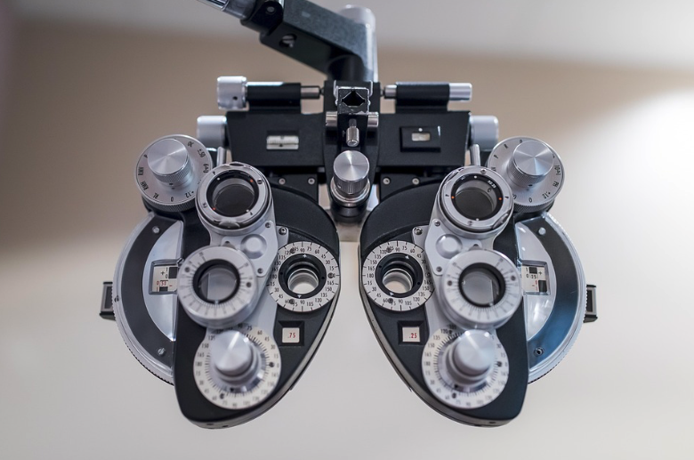
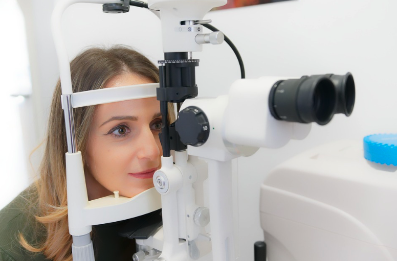
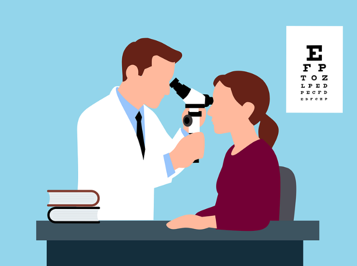
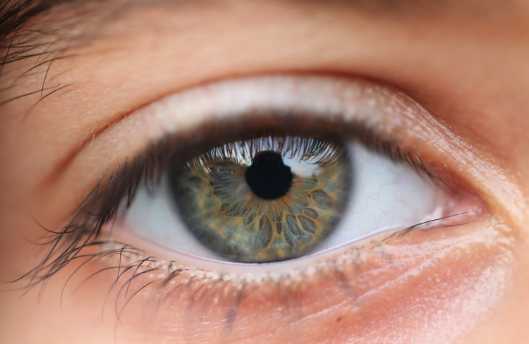

Eye Library
Learn more about common eye conditions and vision concerns. For additional educational information, visit AllAboutVision.com.
Nearsightedness (Myopia)
- Distant objects appear blurry
- Often begins during childhood
- May cause squinting, headaches, or eye strain
- Corrected with glasses or contact lenses

Astigmatism
- Caused by uneven curvature of the cornea
- Can blur both near and distance vision
- May cause headaches or eye fatigue
- Corrected with glasses or contact lenses
Presbyopia
- Age-related difficulty focusing on near objects
- Usually begins after age 40
- Common sign: holding reading material farther away
- Treated with reading glasses or multifocal lenses


Cataracts
- Clouding of the eye's natural lens
- Common with aging
- Symptoms include glare and blurred vision
- Surgery restores clarity when needed
Glaucoma
- Damage to the optic nerve over time
- Often develops without early symptoms
- Can cause permanent vision loss if untreated
- Routine eye exams help detect glaucoma early

Dry Eye Syndrome
- Occurs when tears evaporate too quickly
- Common with screen use and aging
- Symptoms include irritation and redness
- Many treatment options are available
Diabetic Eye Exams
- Detect early retinal changes caused by diabetes
- Recommended yearly for patients with diabetes
- Helps prevent long-term vision complications
- Important even when vision appears normal